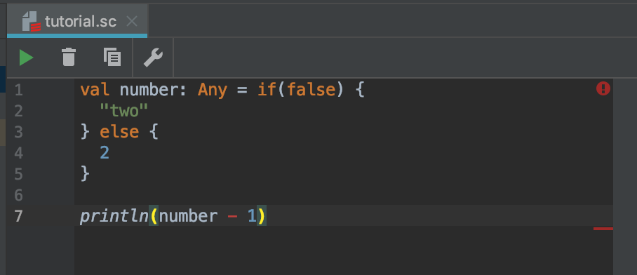

条件分岐(if式)
条件分岐はプログラミングの要です。
このあたりから難しくなってきますが、
便利かつ楽しいものなので頑張っていきましょう。
if式¶
if式というものを使用していきます。
if式を使用すると、
もし◯◯ならAをする
といったプログラムを作る事ができます。 実際に使っていきましょう。
if式はカッコにBooleanを渡して上げる必要があります。
Booleanは前ページで紹介した、trueかfalseのどちらかの値を持つ型です。
if式は、trueを渡されると{}(波括弧)で囲まれたコードを実行します。
falseを渡されると何も実行されません
// if式にtrueを渡す if(true) { println("真") } > 真 // if式にfalseを渡す(何も出力されない) if(false) { println("真") }
else¶
elseを用いることで、
もし◯◯ならAをする、
◯◯でなければBをする。
というプログラムを作ることができます。 試しに、年齢が18歳以上かどうかをチェックするプログラムを作ってみます。
// 20歳の場合 val age = 20 if(age >= 18) { println("18歳以上です") } else { println("18歳未満です") } > 18歳以上です
// 16歳の場合 val age = 16 if(age >= 18) { println("18歳以上です") } else { println("18歳未満です") } > 18歳未満です
else if¶
elseだけでは、
trueの場合とfalseの場合の2つしか表現することが出来ません。
else ifを使用することで複数の条件を指定することが出来ます。
// 15歳の場合 val age = 15 if(age >= 18) { println("18歳以上です") } else if (age >= 15) { println("15歳以上です") } else if (age >= 10) { println("10歳以上です") } else { println("15歳未満です") } > 15歳未満です
代入¶
ifの{}に挟まれている、一番最後の値は変数に入れることができます。
val age = 20 val message = if(age >= 18) { "18歳以上です" } else { "18歳未満です" } println(message) > 18歳以上です
message変数に
"18歳以上です"という文字列が入ります。めちゃくちゃ便利ですこれ
Any型¶
Anyとは、日本語で任意やなんでもって意味です。
val number: Any = if(false) { "two" } else { 2 }
こちらのコードはtrueの場合"two"、falseの場合2がnumber変数に入ります。
この場合、String型かInt型どっちが入るかわからないのでAny型になっちゃいます。
Any型になるとString型やInt型で出来ることができなくなったり色々面倒なことになります。
以下の画像のように、Int型で出来るはずの引き算をしようとするとエラーになったりします。
絶対にAny型にならないようにしてください。
Any型になってもこのエラーを回避する方法もありますが、
絶対にAny型にならないようにしてください。
